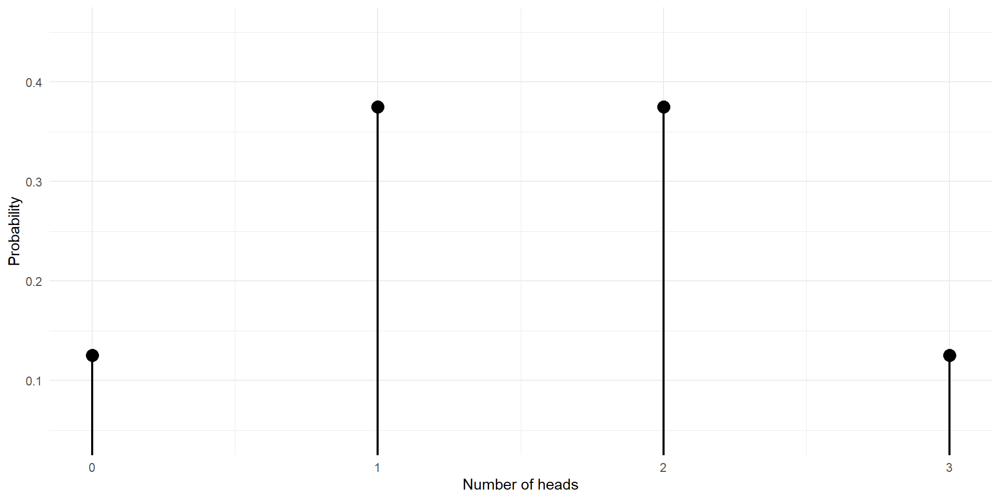
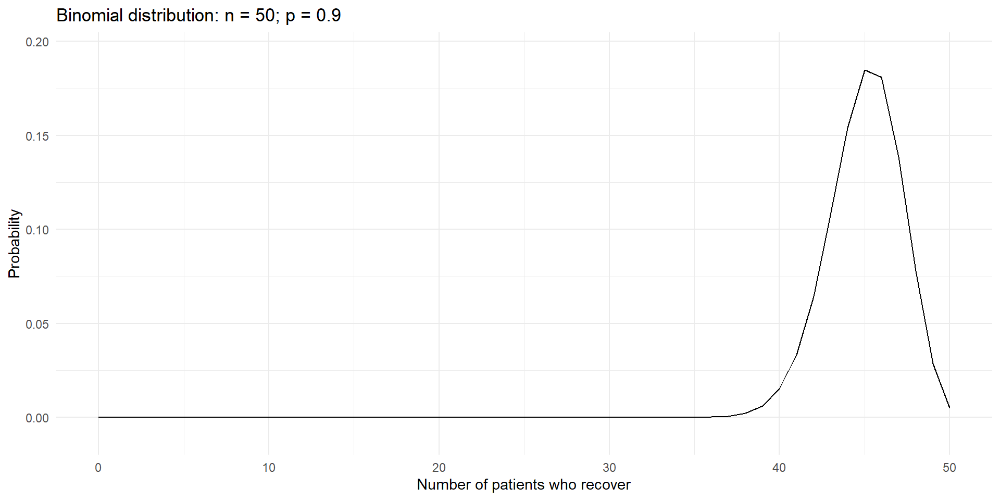
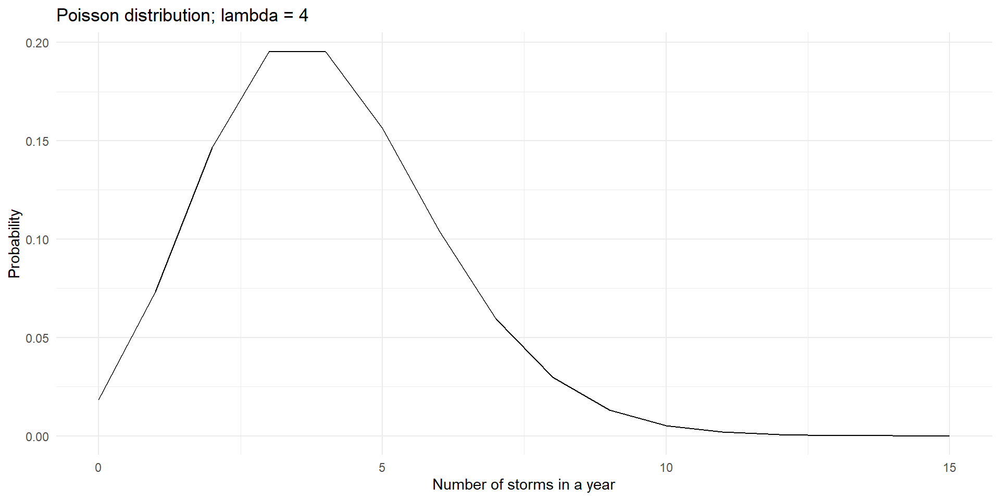

| Number of heads | Probability |
|---|---|
| 0 | 1/8 |
| 1 | 3/8 |
| 2 | 3/8 |
| 3 | 4/8 |
ST201 - Data analysis
So far, we have mainly described data that we have observed.
Probability lets us describe uncertainty about outcomes that could occur.
We represent the outcome of interest using a random variable.
A random variable assigns a numerical value to the outcome of a random process.
A random variable is written using a capital letter, such as \(X\).
A possible value is written using a lowercase letter, such as \(x\)
Imagine tossing a fair coin three times.
There are \(2^3 = 8\) equally likely outcomes:
HHH, HHT, HTH, THH, HTT, THT, TTH, TTT
Let \(X\) be the number of heads.
\[ X \in \{0, 1, 2, 3\} \]
We can represent the probability that our random variable will take a certain value.
\[ P(X = x) = f(x) \]
Each probability is between 0 and 1
The probabilities across all possible values add up to 1
\[ 0 \leq P(X = x) \leq 1 \qquad \text{and} \qquad \sum_x P(X = x) = 1 \]
Let’s look at the probability mass function for the fair coin toss
| Number of heads | Probability |
|---|---|
| 0 | 1/8 |
| 1 | 3/8 |
| 2 | 3/8 |
| 3 | 4/8 |

\[ \frac18 + \frac38 + \frac38 + \frac18 = 1 \]
The expected value is the long-run average value of a random variable over many repetitions of the same process.
For a discrete random variable:
\[ E[X]=\sum_x x \;P(X=x) \]
The expected value is a weighted average, with more likely values receiving more weight.
\[ E[X] =0\left(\frac18\right) +1\left(\frac38\right) +2\left(\frac38\right) +3\left(\frac18\right) =1.5 \]
We expect an average of 1.5 heads per set of three tosses in the long run
The variance describes how spread out the values of a random variable are around its expected value.
\[ \operatorname{Var}(X)=E[X^2]-{E[X]}^2 \]
The standard deviation is the square root of the variance
\[ SD(X)=\sqrt{\operatorname{Var}(X)} \]
Variance is measured in squared units
Standard deviation is in the original units
We will focus on three common discrete probability distributions.
| Distribution | What does it model? | Parameters |
|---|---|---|
| Bernoulli | One trial with two outcomes | \(p\) |
| Binomial | Number of successes in a fixed number of trials | \(n,p\) |
| Poisson | Number of events in a fixed interval | \(\lambda\) |
These distributions are related, but they answer different questions.
A Bernoulli random variable represents one trial with two possible outcomes.
We usually code the outcomes as:
Examples:
For \(X \sim \operatorname{Bernoulli}(p)\):
\[ P(X = x) = \begin{cases} p, & x = 1,\\ 1 - p, & x = 0,\\ 0, & \text{otherwise}. \end{cases} \]
The only parameter is \(p\), the probability of success.
Because the outcomes are 0 and 1:
\[ E[X] = p \]
and
\[ \operatorname{Var}(X)=p(1-p) \]
For a Bernoulli variable, the expected value is simply the probability of success.
Suppose 8% of products from a production line are defective.
\[X = \begin{cases} 1, & \text{if the product is defective},\\ 0, & \text{otherwise}. \end{cases} \]
We know that \(X \sim \operatorname{Bernoulli}(0.08)\).
A Bernoulli variable describes the outcome of one trial.
What if we repeat the trial a fixed number of times and count the successes?
Examples:
This leads to the binomial distribution
A random variable \((X)\) has a binomial distribution if it counts the number of successes in \((n)\) trials, where:
We write:
\[ X \sim \operatorname{Binomial}(n, p) \]
If \(X \sim \operatorname{Binomial}(n, p)\), then:
\[ P(X=k)=\binom{n}{k}p^k(1-p)^{n-k} \]
Here:
The formula combines the probability of a particular success/failure pattern with the number of patterns that contain \((k)\) successes
For \(X \sim \operatorname{Binomial}(n,p)\):
\[ \begin{aligned} E[X] &= np \\[4pt] \operatorname{Var}(X) &= np(1 - p) \end{aligned} \]
The expected number of successes is the number of trials multiplied by the success probability.
For example, if 50 patients each have a 90% probability of recovery
\[ E[X] = 50(0.9) = 45 \]
We expect around 45 recoveries on average across repeated groups of 50 similar patients.
Suppose each of 50 patients has a 90% probability of recovering, and assume outcomes are independent.
Let \((X)\) be the number who recover.
\[ X \sim \operatorname{Binomial}(n = 50,p = 0.9) \]
We can use this model to answer questions such as:
n <- 50 # Number of patients
p <- 0.9 # Probability of success
k <- 0:n # Number of trials
# Calculate the probability mass function
pmf <- dbinom(k, size = n, prob = p)
# Output
data.frame(recoveries = k, probability = pmf) |> head()
## recoveries probability
## 1 0 1.000000e-50
## 2 1 4.500000e-48
## 3 2 9.922500e-46
## 4 3 1.428840e-43
## 5 4 1.510998e-41
## 6 5 1.251107e-39
The distribution is concentrated around 45 recoveries, because 45 is the expected value.
A cumulative distribution function (CDF) gives the probability that a random variable is less than or equal to a value.
\[ F(x) = P(X \leq x) \]
For example:
\[ P(X\leq 40) \]
means the probability of observing 40 or fewer recoveries.
For discrete random variables, the CDF adds the probabilities up to and including the specified value.
Suppose \((X)\) is the number of patients who recover.
Be careful with the boundary: “at least 40” includes 40, whereas “more than 40” does not.
d, p, and qFor many probability distributions, R uses a consistent naming pattern.
| Prefix | Purpose | Binomial example |
|---|---|---|
d |
Probability at an exact value | dbinom() |
p |
Cumulative probability, (P(Xx)) | pbinom() |
q |
Quantile / percentile | qbinom() |
For the binomial distribution, these functions all use the same parameters: size and prob.
# Probability of exactly 40 recoveries
dbinom(x = 40, size = 50, prob = 0.9)
## [1] 0.01518333
# Probability of 40 or fewer recoveries
pbinom(q = 40, size = 50, prob = 0.9)
## [1] 0.02453794
# Probability of at least 45 recoveries
1 - pbinom(q = 44, size = 50, prob = 0.9)
## [1] 0.616123
# 80th percentile
qbinom(p = 0.8, size = 50, prob = 0.9)
## [1] 47The Poisson distribution models the number of events in a fixed interval of time, space, or another exposure, when events occur at an average rate.
Examples:
We write:
\[ X\sim\operatorname{Poisson}(\lambda) \]
where \(\lambda\) is the expected number of events in the interval.
For \(X\sim\operatorname{Poisson}(\lambda)\):
\[ P(X=k)=\frac{e^{-\lambda}\lambda^k}{k!}, \qquad k=0,1,2,\ldots \]
The parameter \(\lambda\) is the average event count for the interval being modelled.
The mean and variance are:
\[ E[X] = \lambda \qquad \text{and} \qquad \operatorname{Var}(X)=\lambda \]
The Poisson distribution has the same numerical value for its mean and variance.
Suppose a country experiences an average of 4 tropical storms per year.
Let \((X)\) be the number of storms in a year.
\[ X \sim \operatorname{Poisson}(\lambda=4) \]
The model can answer questions such as:
We are modelling a count over a specified interval: one year.
R)lambda <- 4 # Average number of storms per year
k <- 0:15 # Number of storms
# Probability mass function
pmf <- dpois(k, lambda = lambda)
data.frame(storms = k, probability = round(pmf, 4)) |> head()
## storms probability
## 1 0 0.0183
## 2 1 0.0733
## 3 2 0.1465
## 4 3 0.1954
## 5 4 0.1954
## 6 5 0.1563R)
lambda <- 4
# Probability of exactly 6 storms
dpois(x = 6, lambda = lambda)
## [1] 0.1041956
# Probability of 4 or fewer storms
ppois(q = 4, lambda = lambda)
## [1] 0.6288369
# Probability of more than 4 storms
1 - ppois(q = 4, lambda = lambda)
## [1] 0.3711631
# 80th percentile
qpois(p = 0.8, lambda = lambda)
## [1] 6Use a Bernoulli distribution when:
Use a binomial distribution when:
Use a Poisson distribution when:
| Question | Function pattern |
|---|---|
| Probability of exactly (x) | d*() |
| Probability of at most (x) | p*() |
| Quantile / percentile | q*() |